来源：PDF 学习笔记 · 共 25 页 · 提取文本 11203 字 · 提取插图 28 张
PCIE协议学习笔记
1. PCIe 概述
1.1 什么是 PCIe
PCI Express（PCIe，Peripheral Component Interconnect Express）是一种高速串行点对点双单工
互连标准，由 PCI-SIG（PCI Special Interest Group）制定和维护。它取代了早期的并行 PCI 和 PCI-X
总线，是现代计算机和服务器中连接 CPU 与外围设备（GPU、NVMe SSD、网卡、加速卡等）的核心
I/O 互连协议。
核心理念：PCIe 采用点对点（Point-to-Point）串行互连，而非 PCI 的共享总线架构。每个设备独享
链路带宽，通过 Switch（交换器）进行路由分发，从根本上消除了总线竞争问题。
1.2 演进历史
1.3 PCIe 的核心优势
•
高带宽：从 2.5 GT/s 起步，每代翻倍，PCIe 6.0 达 64 GT/s，7.0 达 128 GT/s
•
可扩展通道：支持 x1 / x2 / x4 / x8 / x16 / x32 通道宽度，灵活适配不同设备带宽需求
•
点对点架构：消除总线竞争，每个链路独享带宽
•
全双工通信：发送和接收独立通道，双向同时传输
•
向后兼容：PCIe 4.0 插槽可插 PCIe 3.0 卡（降速运行），保证生态兼容
•
低延迟：硬件级事务路由，延迟远低于网络协议栈
•
丰富的高级特性：SR-IOV 虚拟化、ATS 地址翻译、热插拔、ASPM 节能等
2. PCIe 系统架构
2.1 拓扑结构
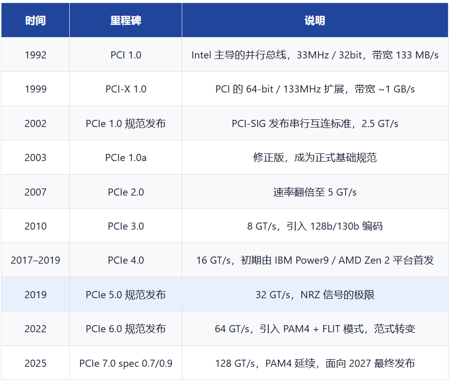
PCIe 采用 树状点对点拓扑，以 Root Complex 为根，通过 Switch 扩展连接多个 Endpoint。所有设
备共享统一的 PCI 配置空间和地址域。
2.2 核心组件
•
Root Complex（RC，根复合体）
◦PCIe 拓扑的根节点，通常集成在 CPU 或主板芯片组中
◦连接 CPU/内存子系统与 PCIe 域
◦生成 PCIe 事务（代表 CPU 发起 DMA 读写）
◦包含一个或多个 Root Port（根端口），每个端口连接一条 PCIe 链路
◦负责配置空间的枚举和资源分配
•
Switch（交换器）
◦多端口设备，用于扩展 PCIe 拓扑
◦内部包含多个虚拟 PCI-to-PCI 桥（Virtual Bridge）
◦基于 ID 路由、地址路由、隐式路由三种方式转发 TLP
◦每个端口可连接一个 Endpoint 或级联另一个 Switch
•
Endpoint（EP，端点设备）
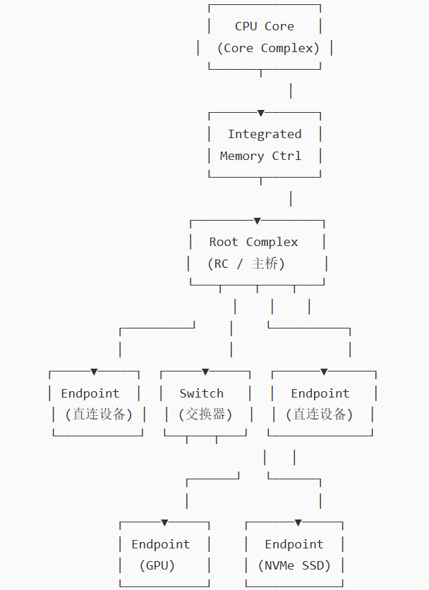
◦PCIe 事务的发起者或终结者
◦分为 Legacy Endpoint（兼容 PCI 配置）和 PCIe Endpoint（仅支持 Enhanced 配置）
◦典型设备：GPU、NVMe 控制器、网卡、FPGA 加速卡
•
PCIe-to-PCI/PCI-X Bridge（桥接器）
◦连接传统 PCI/PCI-X 设备到 PCIe 域
◦实现 PCI 并行事务与 PCIe 串行 TLP 的协议转换
2.3 链路与通道
PCIe 链路（Link）由一组 Lane（通道）组成，每个通道包含两对差分信号线（TX+/TX- 和
RX+/RX-），即 4 根物理线。链路宽度记为 xN，N 为通道数。
通道聚合：多通道链路在物理层将数据 字节条带化（Byte Stripping）分散到各通道并行发送。例如
x16 链路中，每个时钟周期将 16 字节数据分到 16 条通道上同时传输，实现带宽倍增。
3. PCIe 协议分层模型
PCIe 采用 三层协议栈设计，从上到下依次为事务层、数据链路层和物理层。每一层在发送方向添加各
自头/尾，在接收方向逐层剥离。
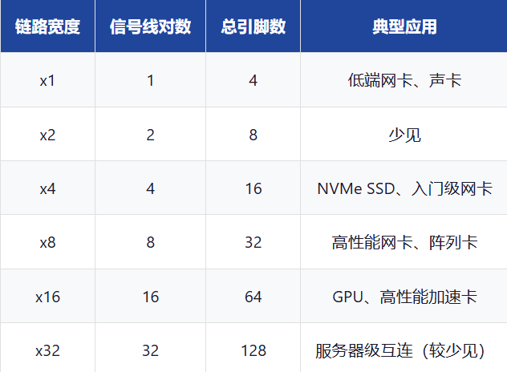
3.1 事务层（Transaction Layer）
事务层负责处理 TLP（Transaction Layer Packet，事务层包）的组装、路由和拆解。这是 PCIe 协议
中最核心的一层。
主要功能
•
TLP 组装与拆解：将上层请求封装为 TLP（Header + Data Payload + 可选 ECRC）
•
路由：支持三种路由方式：
◦地址路由（Address Routing）：基于内存/IO 地址，用于 Memory Read/Write、IO
Read/Write
◦ID 路由（ID Routing）：基于 Bus/Device/Function 号，用于配置请求和消息
◦隐式路由（Implicit Routing）：通过消息类型隐含目的地，用于中断和电源管理消息
•
流量类别（TC，Traffic Class）与虚拟通道（VC，Virtual Channel）：支持 8 个 TC 等级和最多 8
个 VC，实现 QoS 服务质量保障
•
流控（Flow Control）：基于信用机制，接收方通告可用缓冲空间，发送方据此控制发送节奏
•
排序规则：遵循生产者-消费者排序模型，确保数据一致性
TLP 类型
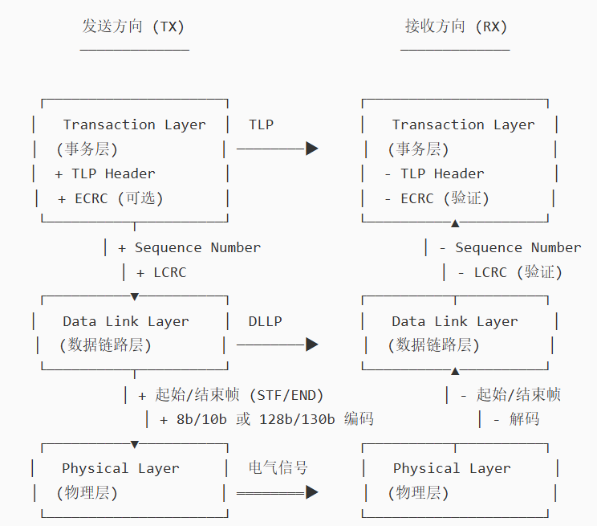
TLP 结构
3.2 3.2 数据链路层（Data Link Layer）
数据链路层提供 可靠传输保证，确保 TLP 在链路上无差错地传递。
主要功能
•
序列号管理：为每个 TLP 分配 12-bit 序列号（Sequence Number），用于排序和重传
•
CRC 校验：添加 32-bit LCRC（Link CRC），接收方验证数据完整性
•
重传机制（Retry）：若接收方检测到错误或序列号不连续，发送 NAK，发送方从 Replay Buffer 重
传
•
ACK/NAK 协议：接收方正确接收后返回 ACK，错误时返回 NAK 触发重传
•
DLLP（Data Link Layer Packet）：链路层自身的控制包，包括：
◦Ack / Nak：确认 / 否认
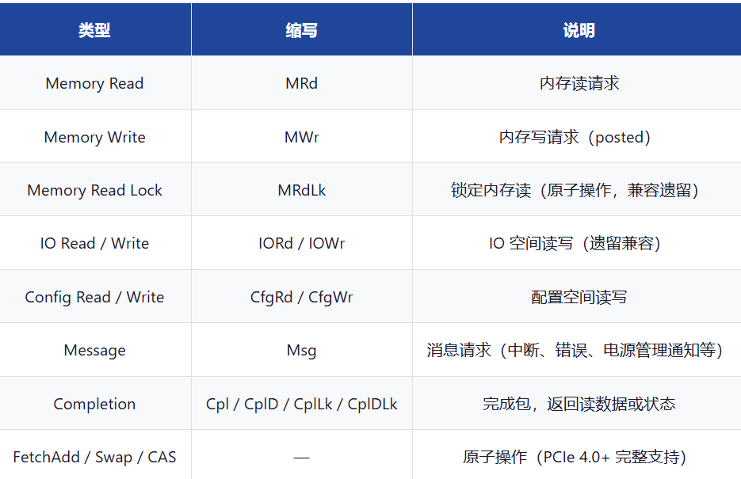
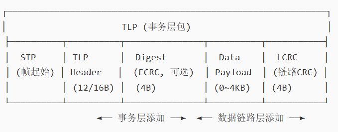
◦InitFC1 / InitFC2 / UpdateFC：流控初始化和更新
◦PM：电源管理消息
3.3 物理层（Physical Layer）
物理层负责 电气信号传输和编码，分为逻辑子层和电气子层。
逻辑子层
•
MAC（Media Access Control）：链路训练、状态机管理（LTSSM）
•
编码/解码：8b/10b（Gen1-2）、128b/130b（Gen3-5）、PAM4 + FLIT（Gen6+）
•
扰码（Scrambling）：展频以降低 EMI 干扰
•
通道对齐与去偏斜：多通道链路中补偿各通道间时延差异
电气子层
•
差分驱动器/接收器：每通道 TX+/TX- 和 RX+/RX- 差分对
•
均衡（Equalization）：Gen3+ 引入接收端均衡（CTLE + DFE），补偿高频信道损耗
•
信号电平：NRZ 模式下差分峰峰值约 800-1200mV
LTSSM（链路训练和状态状态机）
物理层的核心控制状态机，负责链路初始化、速率协商、宽度协商、均衡训练和电源管理状态切换。
主要状态包括：
4. PCIe 各版本详解
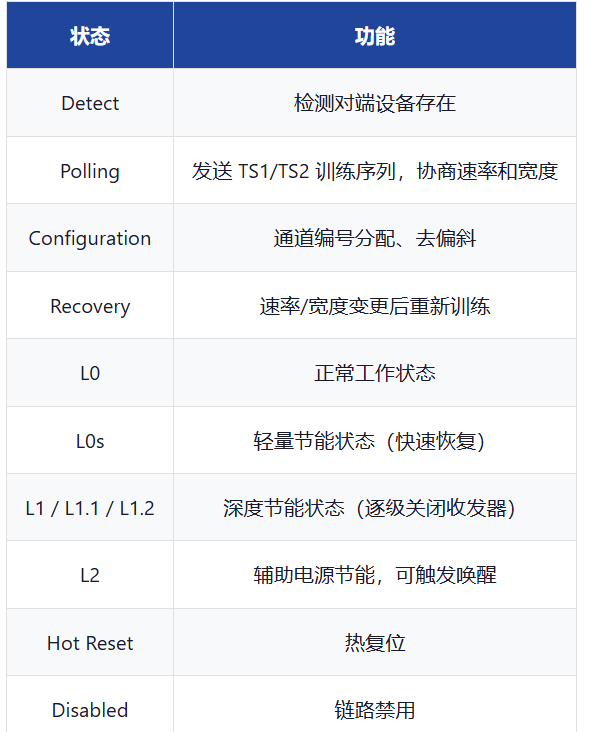
PCIe 每一代规范的核心变化是 数据速率翻倍，同时伴随编码效率、信号调制和协议机制的改进。以下
逐版本详细介绍。
4.1 4.1 PCIe 1.0a / 1.1
发布时间：2002（1.0）/ 2005（1.0a）/ 2007（1.1）
关键参数
核心特性
•
首次定义三层协议栈：事务层、数据链路层、物理层
•
8b/10b 编码：每 8 bit 数据编码为 10 bit，保证直流平衡和时钟恢复，但牺牲 20% 带宽
•
点对点架构替代共享总线：根复合体 + 交换器 + 端点拓扑
•
流控机制：基于信用的端到端流控，支持 6 种流控类型（Posted/Non-Posted Header/Data、
Completion Header/Data）
•
MSI（Message Signaled Interrupt）：用内存写事务替代传统引脚中断
•
ASPM（Active State Power Management）：L0s 和 L1 节能状态
•
热插拔（Hot Plug）与热移除
•
PCIe 1.1 增补：增加 ECRC（端到端 CRC）支持、完成超时控制（Completion Timeout）
带宽计算示例（PCIe 1.0 x16）： 2.5 GT/s × 16 lanes × 80%(8b/10b) = 32 Gb/s = 4 GB/s（单
向），双向 8 GB/s
4.2 PCIe 2.0 / 2.1
发布时间：2007（2.0）/ 2009（2.1）
关键参数
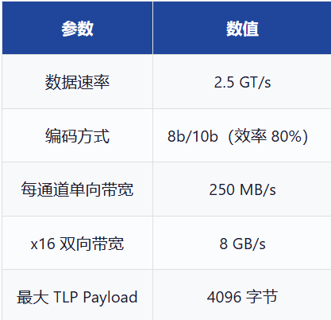
核心特性
•
速率翻倍：从 2.5 GT/s 提升到 5 GT/s，直接将带宽翻倍
•
仍采用 8b/10b 编码，但优化了扰码多项式
•
SR-IOV（Single Root I/O Virtualization）初步支持：PCIe 2.1 引入，允许单个物理设备呈现为多
个虚拟功能（VF），直接分配给不同虚拟机，绕过 Hypervisor 软件交换
•
ATS（Address Translation Services）：允许端点设备缓存地址翻译结果（IOMMU TLB 的设备侧
延伸），减少地址翻译延迟
•
更多 TLP 类型：增加原子操作（FetchAdd、Swap、CAS）的早期定义
•
功能级复位（FLR，Function Level Reset）：可单独复位设备中的某个 Function，不影响其他
Function
•
扩展配置空间：完整的 4096 字节 Enhanced Configuration 空间访问
4.3 4.3 PCIe 3.0
发布时间：2010（规范）/ 2012（首款产品 Intel X79）
关键参数
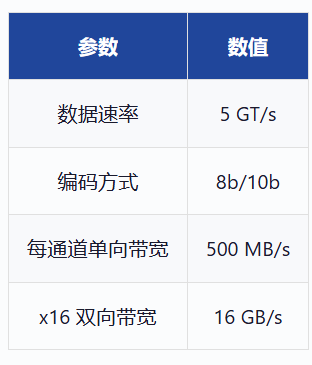
核心特性
•
128b/130b 编码取代 8b/10b：每 128 bit 数据仅添加 2 bit 同步头，编码效率从 80% 提升到
98.46%，带宽利用率提升约 23%
•
接收端均衡：引入 CTLE（连续时间线性均衡）和 DFE（判决反馈均衡），补偿 8 GT/s 下更严重的
高频信道损耗。均衡参数通过 Preset + Coefficient 两阶段训练协商
•
扰码多项式更新：采用更长多项式，改善高频 EMI 特性
•
更完善的 SR-IOV 和 ATS 支持，成为虚拟化 I/O 的标准
•
动态电源管理增强：更快的 L0s/L1 状态切换
•
Completion Timeout 范围扩展：支持更长的超时时间（最高约 10 秒），适配慢速设备
•
Reduce/Resizable BAR（可调整 BAR 大小）的概念在这一代逐步引入配置支持
为什么 8 GT/s 而非 10 GT/s？PCI-SIG 选择 8 GT/s 而非简单翻倍到 10 GT/s，是因为 128b/130b 编码
的效率提升使得 8 GT/s 的有效带宽接近 10 GT/s × 80%（即 PCIe 2.0 翻倍后的带宽），同时降低了对
信道带宽的要求，保证了与现有 PCB 材料的兼容性。
4.4 4.4 PCIe 4.0
发布时间：2017（规范）/ 2019（首款消费级产品 AMD Zen 2 / X570）
关键参数
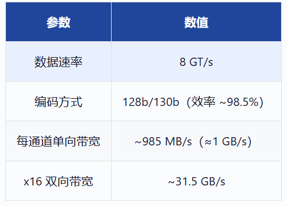
核心特性
•
速率再次翻倍至 16 GT/s，沿用 128b/130b 编码
•
更严格的信道损耗预算：16 GT/s 下 Nyquist 频率 8 GHz，对 PCB 材料和连接器提出更高要求（推
荐低损耗板材）
•
增强的接收端均衡：更复杂的 DFE 抽头数和自适应均衡
•
Retimer（重定时器）支持：PCIe 4.0 正式定义 Retimer 设备类，用于长距离信号补偿，在链路中
间再生信号，扩展可达距离
•
原子操作完善：FetchAdd、Unconditional Swap、Conditional Swap、CAS 的完整事务支持
•
Resizable BAR 标准化：允许系统动态调整设备 BAR 大小，使 GPU 显存可完全映射到 CPU 地址空
间（对游戏和 GPU 直通虚拟化意义重大）
•
扩展机制增强：Designated Vendor-Specific Extended Capability（DVSEC）
•
多播（Multicast）事务支持（可选）
Retimer vs Redriver：
•
Redriver 是模拟信号放大器，仅补偿损耗但不重定时；
•
Retimer 是数字信号再生器，包含时钟数据恢复（CDR）电路，可完全重建信号时序，支持级联，
是 Gen4+ 长链路的标准方案。
4.5 4.5 PCIe 5.0
发布时间：2019（规范）/ 2021–2022（首款产品 Intel Alder Lake / Sapphire Rapids）
关键参数
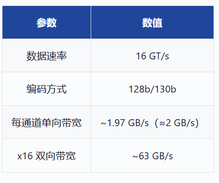
核心特性
•
32 GT/s，NRZ（不归零）调制的极限速率，仍是 128b/130b 编码
•
Nyquist 频率 16 GHz，信道损耗预算极其严格（典型 ~36 dB @ 16 GHz），推动低损耗 PCB 材料
和高性能连接器的普及
•
Retimer 更广泛应用：32 GT/s 下绝大多数服务器/工作站链路需要 Retimer 补偿信道损耗
•
均衡训练优化：Phase 2 均衡（系数调节）流程优化，减少训练时间
•
信号完整性（SI）挑战：引入更严格的发送端预加重/去加重要求
•
与 CXL 2.0 对齐：PCIe 5.0 的物理层是 CXL 2.0 的基础
•
Alternate Protocol（备用协议）复用机制：允许 PCIe 物理层承载其他协议（如 CXL），通过协议
复用协商切换
NRZ vs PAM4：
•
PCIe 5.0 的 32 GT/s 是 NRZ 信号（每个符号携带 1 bit）在消费级 PCB 上可达的工程极限。
•
进一步提速必须转向 PAM4（每符号 2 bit），这就是 PCIe 6.0 的核心变革。
4.6 4.6 PCIe 6.0
发布时间：2022（规范发布）/ 2024–2025（首批产品）
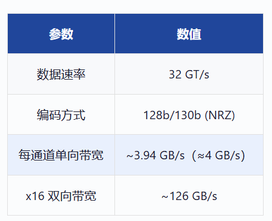
关键参数
核心特性 — 范式转变
•
PAM4 调制：从 NRZ（2 电平）升级为 PAM4（4 电平），每个符号携带 2 bit，速率翻倍而信号波
特率（Baud Rate）不变（32 GBaud），信道损耗与 PCIe 5.0 相同
•
FLIT（Flow Unit）模式：
◦数据以固定 256 字节的 FLIT 为单位封装传输
◦每个 FLIT 包含 236 字节有效载荷 + 8 字节 CRC + 6 字节 FEC（前向纠错）
◦FEC 使用格雷多项式码（Gray-coded Polynomial），可纠正 1-bit 错误
◦CRC 检测多 bit 错误，触发链路层重传
◦FLIT 模式下不再需要 128b/130b 同步头和帧定界符，编码开销从 ~1.5% 降至 ~5.5%（但
PAM4 翻倍已远超此开销）
•
重传机制变化：FLIT 模式下数据链路层重传以 FLIT 为单位，CRC 检测到错误时重传整个 FLIT
•
前向兼容性设计：PAM4 + FLIT 的引入使协议可以平滑过渡到更高速率
•
L1p2 新增节能状态：进一步降低空闲功耗
•
与 CXL 3.0 对齐
PAM4 的挑战：4 电平信号的每个电平间距仅为 NRZ 的 1/3，SNR（信噪比）要求更高。PAM4 信号的
眼图有 3 个"眼"，每个眼的张开度更小，对均衡和时钟恢复要求极高。FCC + CRC 的组合就是为了在
更高误码率下保证可靠传输。
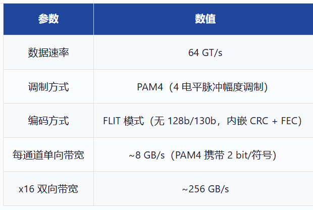
NRZ vs PAM4 信号对比
4.7 4.7 PCIe 7.0（spec 0.7/0.9 预览）
发布时间：spec 0.5（2024）/ spec 0.7（2025）/ 最终版预计 2027
关键参数（基于已发布草案）
核心特性（草案）
•
速率再次翻倍至 128 GT/s，延续 PAM4 + FLIT 架构
•
64 GBaud 信号，Nyquist 频率 32 GHz，对信道和封装提出极严苛要求
•
更先进的均衡与信号处理：可能需要更复杂的 DFE 和连续时间均衡
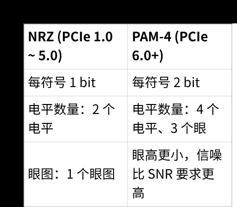
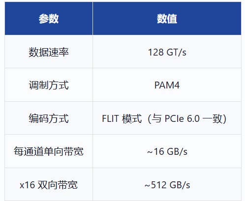
•
面向 AI/HPC 场景：128 GT/s 专为 GPU-GPU、GPU-NVMe 互连的超高带宽需求设计
•
低功耗优化：进一步降低每 bit 传输能耗
•
可能与 CXL 4.0 协同
状态说明：PCIe 7.0 规范截至 2025 年处于草案阶段（spec 0.7/0.9），最终发布预计 2026-2027 年，
首批硬件产品预计 2027-2028 年。以上参数基于公开草案，最终规范可能有调整。
5. 版本对比总表
5.1 带宽与编码对比
*PCIe 6.0/7.0 采用 PAM4，波特率（Baud Rate）为数据速率的一半，因此 Nyquist 频率与
Gen5/Gen6 的 NRZ 对应频率不同但信道损耗类似。PCIe 6.0 的 64 GT/s PAM4 信号波特率为 32
GBaud，Nyquist 16 GHz，与 PCIe 5.0 的 32 GT/s NRZ 信号信道要求相近。
5.2 功能特性演进
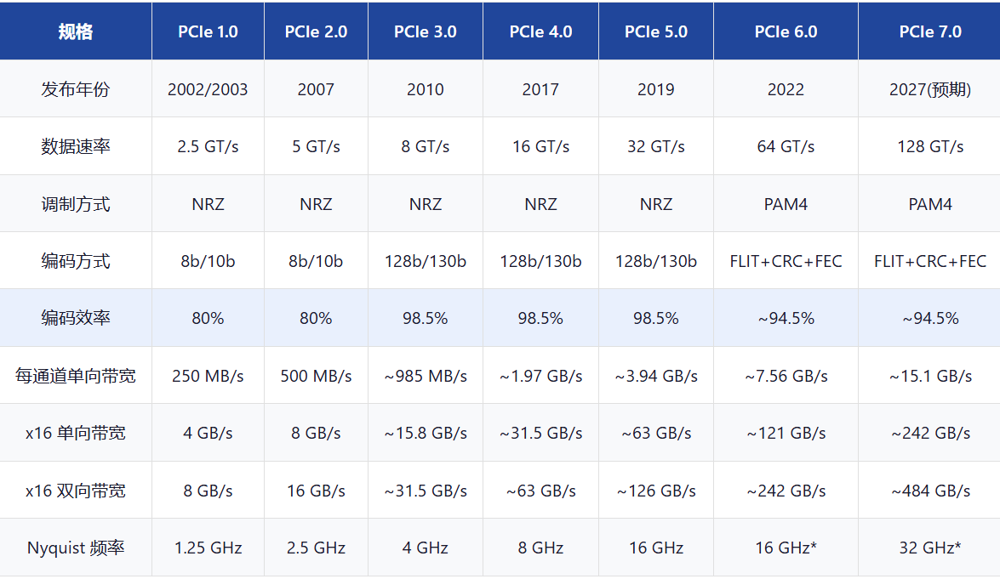
（本页无文本内容）
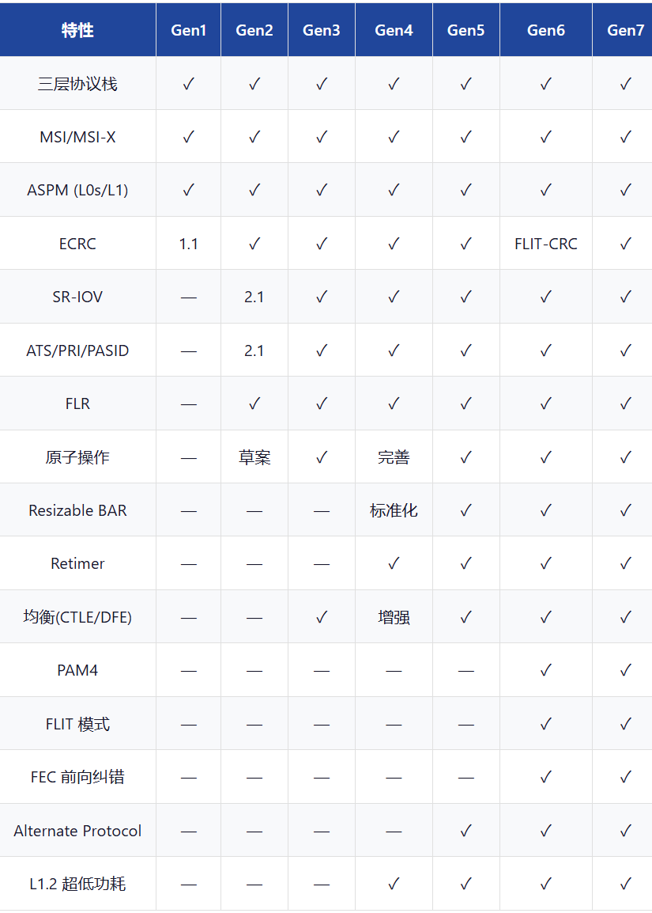
6. 关键技术特性专题
6.1 编码机制
8b/10b 编码（Gen 1-2）
•
将 8 bit 数据映射为 10 bit 码字
•
保证 DC 平衡（0/1 数量均衡），防止基线漂移
•
提供足够的电平跳变用于时钟恢复
•
控制符号（K 码）用于帧定界和链路训练
•
开销 25%（效率 80%）
128b/130b 编码（Gen 3-5）
•
128 bit 数据块 + 2 bit 同步头
•
同步头区分数据块（01）和有序集块（10）
•
使用扰码器保证 DC 平衡和时钟恢复，替代 8b/10b 的冗余编码
•
开销仅 ~1.5%（效率 98.46%）
•
配合更强的接收端均衡技术，使更高速率成为可能
FLIT 模式（Gen 6+）
•
PAM4 调制下信号眼图更小，需要更可靠的检错/纠错
•
256 字节固定 FLIT 单元：236B 数据 + 8B CRC + 6B FEC + 6B 其他
•
FEC 可纠正 1-bit 错误，CRC 检测多 bit 错误并触发重传
•
不再使用 128b/130b 同步头和帧定界符
•
FLIT 模式天然支持更高效的重传和流控
6.2 电源管理（ASPM）
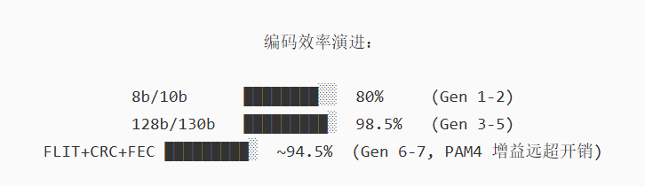
PCIe 电源管理分为 ASPM（Active State Power Management）（链路层自动管理）和 PM
（Power Management）（设备级软件管理）两部分。
6.3 错误处理机制
错误检测层次
•
物理层：8b/10b 或 128b/130b 解码错误、不一致性错误（Disparity Error）
•
数据链路层：LCRC 校验、序列号不连续
•
事务层：ECRC（端到端 CRC，可选）、TLP 格式错误
错误报告与处理
•
AER（Advanced Error Reporting）：详细的错误寄存器集，报告错误类型、来源、严重程度
•
可纠正错误（Correctable Error）：如 LCRC 错误后重传成功，不影响正常操作
•
不可纠正错误（Uncorrectable Error）：如 CRC 错误重传仍失败，触发错误处理流程
•
致命错误（Fatal Error）：链路不可恢复，需复位
•
错误注入（Error Injection）：用于测试和验证错误处理机制
6.4 SR-IOV（单根 I/O 虚拟化）
SR-IOV 允许一个物理 PCIe 设备呈现为多个虚拟功能（VF），每个 VF 可直接分配给虚拟机，无需
VMM（虚拟机监控器）介入数据路径。
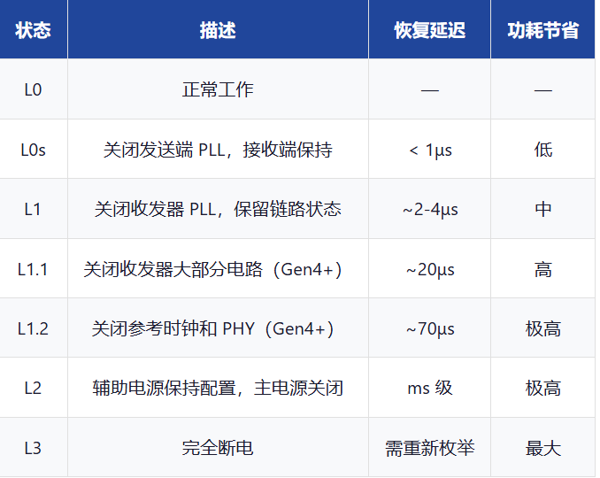
6.5 ATS/PRI/PASID
•
ATS（Address Translation Services）：设备向 IOMMU 请求地址翻译结果并缓存，减少每次 DMA
的翻译延迟
•
PRI（Page Request Interface）：设备可向系统请求页面调度（页面不在内存时请求系统换入），
支持设备端按需页面分配
•
PASID（Process Address Space ID）：使设备可以代表特定进程执行 DMA，实现进程级地址空间
隔离，是 SVM（Shared Virtual Memory）的基础
6.6 原子操作（Atomic Operations）
PCIe 3.0 起引入硬件级原子操作，允许设备在不持有锁的情况下完成读-修改-写操作。
6.7 Resizable BAR
传统 PCIe 设备的 BAR（Base Address Register）大小固定且通常较小（如 GPU 的显存 BAR 仅
256MB），CPU 只能通过窗口映射方式访问大容量显存。Resizable BAR（PCIe 4.0 标准化）允许系统
动态调整 BAR 大小，使 GPU 全部显存可直接映射到 CPU 地址空间，大幅提升 CPU-GPU 数据传输效
率。
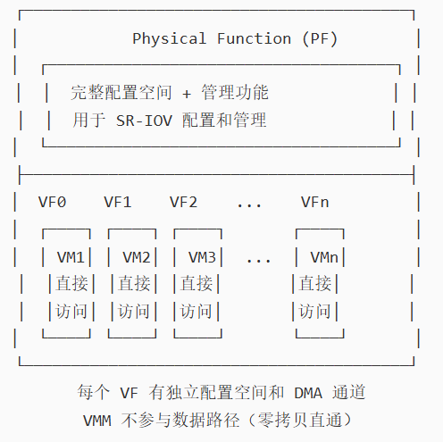
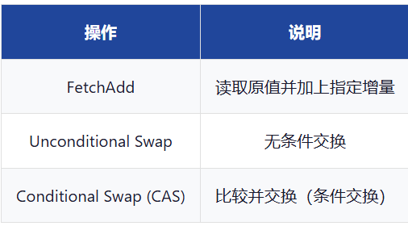
7. IO Die 架构详解
7.1 什么是 IO Die
IO Die（IOD，输入输出芯粒）是 Chiplet（小芯粒）架构中的关键组件，负责将 CPU 核心计算芯粒
（Compute Die / CCD）与外部 I/O 接口（PCIe、内存控制器、USB、网络等）连接。它本质上是将传
统 SoC 中的 I/O 子系统独立为一个单独的硅片（Die），通过高速互连总线与计算芯粒通信。
核心动机：随着制程工艺演进（7nm → 5nm → 3nm），逻辑/计算晶体管的成本持续下降，但模拟
I/O（SerDes、PLL、PHY）难以从先进制程获益。将 I/O 分离到成熟制程的独立 Die 上，可以兼顾 计
算性能（先进制程）和 I/O 成本/良率（成熟制程），实现最优的芯片经济学。
7.2 AMD 的 IO Die 架构
AMD 是 IO Die 架构的先驱和最典型的实践者，从 Zen 2（2019）开始将 IO Die 独立化。
架构演进
AMD 桌面级 IO Die 架构（以 Zen 4 Raphael 为例）
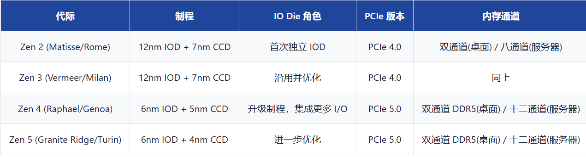
AMD 服务器级 IO Die 架构（以 Zen 4 Genoa 为例）
服务器平台使用 多 IO Die 设计，每个 IOD 管理一部分内存通道和 PCIe 通道，通过 Infinity Fabric 互
连。
7.3 IO Die 中的 PCIe 子系统
在 IO Die 架构中，PCIe Root Complex（RC）不再是 CPU 核心的一部分，而是位于 IO Die 上。PCIe
事务路径如下：
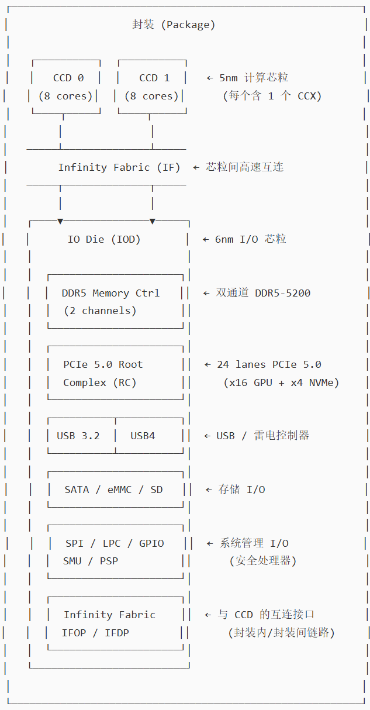
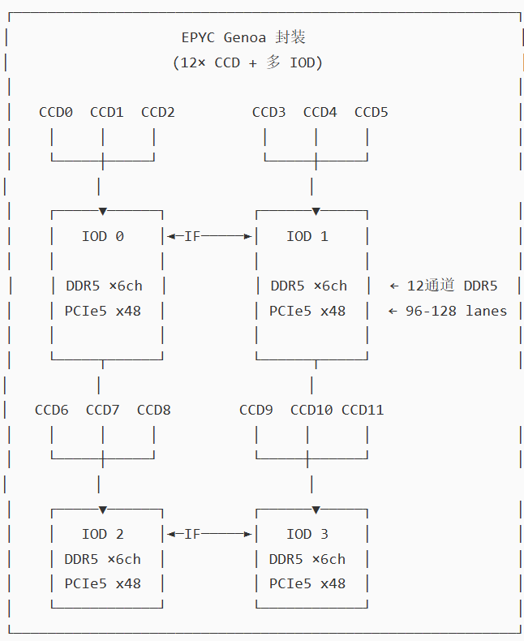
IO Die 中 PCIe 控制器的组成
•
PCIe PHY（物理层电路）：每条 Lane 包含 SerDes、PLL、CTLE/DFE 均衡器，占用大量面积和功
耗
•
PCIe Controller（控制器逻辑）：实现 LTSSM 状态机、数据链路层和事务层逻辑
•
Root Complex Port（根端口）：每个 PCIe 接口对应一个 RC Port，包含配置空间寄存器
•
IOMMU（输入输出内存管理单元）：也位于 IOD 上，负责设备 DMA 地址翻译和权限检查
•
ATS/PRI 逻辑：处理设备发起的地址翻译请求和页面请求
7.4 Infinity Fabric — 芯粒间互连
IO Die 与 Compute Die 之间通过 Infinity Fabric（IF）互连，这是 AMD 的专有高速互连总线。
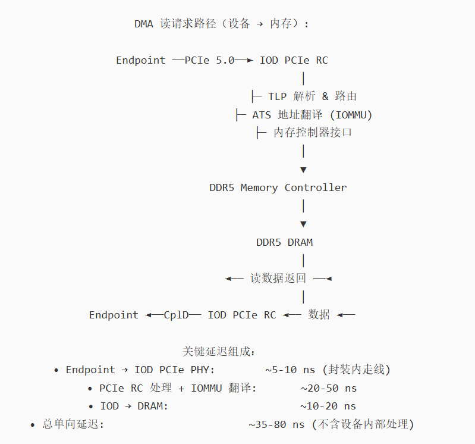
7.5 IO Die 架构的优势
•
制程混搭（Mixed Node）：计算芯粒用先进制程（5nm/3nm），IO Die 用成熟制程
（6nm/12nm），优化成本
•
良率提升：小芯粒面积小、良率高；坏 CCD 可屏蔽，不影响其他芯粒
•
可扩展性：同一 IOD 可搭配不同数量的 CCD，覆盖从桌面到服务器的全产品线
•
I/O 密度不受计算制程限制：模拟电路（SerDes、PLL）在成熟制程上性能更好、功耗更低
•
快速迭代：更新计算架构（换 CCD）时 IOD 可复用，降低研发周期和成本
•
多芯片灵活组合：服务器平台通过多 IOD + 多 CCD 组合实现高核心数
7.6 其他厂商的类似架构
Intel 的 Chiplet / IO Tile 架构
•
Sapphire Rapids（2022）：采用 4 个计算 Tile + 多个 IO Tile 的 Xeon 架构，通过 EMIB
（Embedded Multi-die Interconnect Bridge）互连
•
Meteor Lake（2023）：消费级 Foveros 封装，含 Compute Tile + SoC Tile（IO Die 角色）+
Graphics Tile
•
Granite Rapids / Emerald Rapids：服务器级多 Tile 架构，IO Tile 管理 PCIe 5.0 和 DDR5
Apple 的封装策略
•
Apple Silicon（M1-M4）使用 统一封装（UltraFusion / InFO）而非严格分离 IO Die，但 SoC Tile
中同样有独立的 I/O 区域管理 PCIe/USB/内存
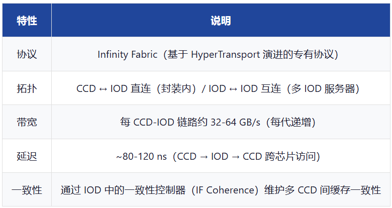
7.7 IO Die 面临的挑战
•
跨 Die 延迟：CCD → IOD → DRAM 路径比单片 SoC 额外增加互连延迟（~30-80 ns），对延迟敏感
型工作负载有影响
•
互连带宽瓶颈：IF 带宽需足够支撑 CCD 的内存和 I/O 需求，否则成为性能瓶颈
•
功耗开销：跨 Die 通信的 SerDes 链路有额外功耗
•
封装复杂度：多 Die 封装需要先进的封装技术（2.5D/3D），增加成本和测试难度
•
一致性维护复杂：多 CCD + 多 IOD 的缓存一致性协议更复杂
8. PCIe 与 CXL 的协同
8.1 8.1 CXL 概述
CXL（Compute Express Link）是建立在 PCIe 物理层之上的高层协议，运行在 PCIe 5.0+ 链路上。它
允许 CPU 与加速器/智能网卡/内存扩展设备之间实现 缓存一致性共享内存。
8.2 CXL 与 PCIe 的关系
8.3 CXL 版本与 PCIe 的对应
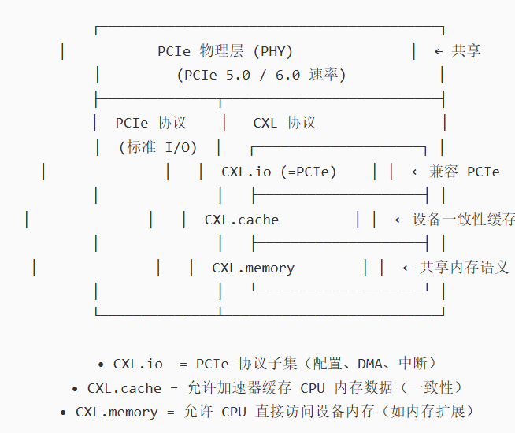
9. 术语表
PCIe_Protocol_Technical_Manual.html
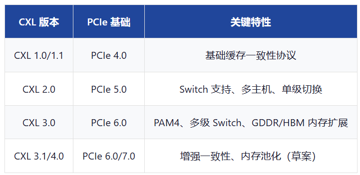